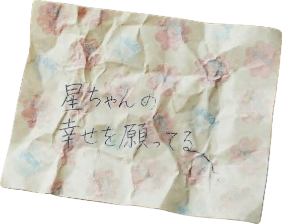

これは
とある兄の記憶
音楽とともに物語をお楽しみいただけます
Thoughts of the Moon
俺の名前は、月野武史。
生まれた時から、先天性白血病だった。
同年代の子供たちが公園で遊んでいるのを、
いつも病院の窓から俺は眺めていた。
注射も薬も、大嫌いだった。
でも――
俺は、生き延びた。
後日、両親から聞かされた。
俺が助かったのは…………
妹のおかげだと。
俺の治療のために生まれてきた子。
名前は……
森村星乃。
夜空の星みたいな名前で、
とても可愛いと思った。
俺が初めて星ちゃんに会ったのは、
両親に連れられて親戚の家に行ったときだった。
玄関の奥から、小さな女の子が顔を出した。
俺と目が合うと、
にこっと笑った。
その目はキラキラしていて、
まるでヒーローを見つめてるみたいだった。
そんなふうに俺を見てくれたのは、
彼女が初めてだった。
同級生はみんな、俺を病弱扱いして
一緒に遊んではくれなかったから。
でも、星ちゃんは違った。
俺を本物のヒーローだと思っているようだ。
照れくさいけど――
悪い気はしなかった。
"星ちゃんのヒーロー。"
それだけで、
心が少し軽くなった。
その夜、星ちゃんが聞いてきた。
「なんで私、お兄ちゃんと苗字が違うの？」
正直、答えに困った。
本当のことなんて、
とても言えるはずがない。
だから俺は、こう言った。
「俺たちは、父さんと母さんの二人の宝物なんだ。
だから、それぞれの苗字をもらったんだよ」
星ちゃんは少し考えてから、
「そっか♪」
そう言って、安心したように笑った。
……もし星ちゃんが、
本当のことを知ったら…
俺のこと
嫌いになるかな……
帰り際、両親に言われた。
「何が聞こえても振り返るな」
だから俺は振り返らなかった。
でも、後ろから聞こえた。
「行かないでーーーーー！！」
泣き叫ぶ声。
星ちゃんの声が、
耳に焼きついた。
俺は知っていた。
星ちゃんが親戚の家で、
楽しそうに過ごしていないことを。
いや。
"楽しそうじゃない"なんて言葉じゃ足りない。
星ちゃんは……
居場所がないって顔をしていた。
だから会いに行くときは必ず、
星ちゃんが喜びそうなものを持っていった。
ミルキー。
小さなお人形。
『星の王子様』の絵本。
どれも宝物みたいに抱きしめて喜んでいた。
だから俺は、
つい嘘をついてしまった。
「『星の王子様』を全部読めるようになったら
星ちゃんを連れて帰る。」
それを聞いた星ちゃんは、
必死で文字を覚えていた。
ページを指でなぞりながら。
何度も、何度も。
本当に、
いい子だな。
星ちゃんが本当に欲しかったもの。
それはきっと、
家に帰ること。
お父さんとお母さん、
そして俺が一緒にいる家に。
でも俺は知っていた。
俺の医療費と星ちゃんの生活費で、
両親はもう限界だった。
二人の子どもを同時に育てる余裕なんて、
本当になかったんだ。
ある日、ミルキーを舐めながら
星ちゃんが言った。
「私一度もプレゼントのお返ししたことない」
俺は軽くからかった。
「じゃあ星ちゃんが大きくなったら
俺の欲しいものを買ってくれ、それまで覚えていたらだけどな」
そう返すと、星ちゃんは
ミルキーの包み紙を差し出してきた。
「将来ほしいものができたら、これに書いて」
小さな手で、ぎゅっと握って。
「私が買ってあげる！
絶対、絶対約束守るからね！」
真剣な顔で、指切りまでしてきた。
……本当に、素直で、いい子だなあ。
俺は見返りなんて求めてないのに。
俺のせいで、寂しい思いをさせてるのに……
俺は嘘はつかないようにしてるが
星ちゃんにだけは、たくさん嘘をついてしまったな。
流れ星に願い事をすれば叶う、って嘘。
『星の王子様』を読めるようになったら連れて帰る、って嘘。
それから……
お父さんとお母さんと
遊園地に行ったことある、って嘘も。
病院と家の往復ばかりだったから。
両親が俺を遊園地に連れて行けるわけないんだ。
本当は俺だって、
星ちゃんも一緒に、
家族みんなで遊園地に行きたかった。
観覧車とか、ジェットコースターとか、
そんなのどうでもよくて。
ただ、四人で一緒に笑ってみたかった。
だから俺は必死に勉強した。
早く大人になりたかった。
早く働いて、
早く金を稼いで、
お父さんとお母さん、
そして星ちゃんを――
支えられるようになりたかった。
そして俺が十八歳のとき。
世界が変わった。
両親が事故で
……死んでしまった。
俺は星ちゃんを迎えに行った。
久しぶりに会った星ちゃんは、
期待した目で俺を見ていた。
でも俺は、両親が死んだことを
上手く説明できなかった。
また、失望させてしまうんじゃないか。
そう思い、口から出た言葉は…
「家事を覚えろ」
だった。
星ちゃんが一人でも生きていけるように。
それだけを考えていた。
彼女に悲しむ時間なんて、与えなかった。
星ちゃんがずっと帰りたがっていた
家なのに。
彼女は嬉しそうじゃなかった。
それから星ちゃんは、俺を避けるようになった。
二人きりの家。
会話は、どんどん減っていった。
星ちゃんが俺を嫌いなのは知っている。
俺が星ちゃんの幼少期を奪った。
両親の愛情も。
全部、俺が奪ったんだ。
だからこそ俺は、
星ちゃんを守らないといけない。
星ちゃんを立派な大人にしないといけない。
俺が居なくなっても生きていけるように。
学年トップの成績だった俺は高校を中退した。
両親が死んでから、
学歴？そんなものはどうでもよくなった。
とにかく金が必要だった。
たくさん。
たくさん。
たくさん。
星ちゃんを大学に行かせるために。
星ちゃんを守るために。
星ちゃんが自由に生きられるように。
きっと大丈夫、全部うまくいく。
俺が一生懸命働けばいい。
俺が何としても星ちゃんの支えになる。
でも現実は甘くなかった。
高校中退した俺に、いい仕事なんて見つからなかった。
俺は……
チンピラになった。
金が稼げるから。
強くなれるから。
星ちゃんを守れるから。
そう思った。
その頃からだった。
妙に身体がだるい。
喧嘩のあと、
血が止まりにくいことが増えた。
鼻血もよく出た。
……昔のことを思い出して
少しだけ怖かった。
でも、
考えないようにした。
俺は、
止まってる暇なんてなかったから。
星ちゃんは、
前にもまして俺を嫌いになった。
俺を空気みたいに扱うようになった。
酒もタバコも。
喧嘩も。
怪我して帰る俺も。
きっと全部、いやだっただろう。
でもな。
お兄ちゃん、
お前を守るために
これしかできなかったんだ。
ごめんな。
ある日、チンピラの後輩が、
星ちゃんの大切な友達を襲った。
俺は……
本当に、知らなかったんだ。
そのとき、星ちゃんは俺に言った。
「お兄ちゃんなんて、いなければよかった！」
……できれば、聞きたくなかった。
胸が引き裂かれるみたいだった。
それでも、立ち尽くしている時間はない。
俺が、星ちゃんにできること。
あいつらには、しっかり釘を刺しておいた。
俺の大事な妹と
妹の友達に
二度と近づくなって。
……俺、星ちゃんを守れてるかなあ。
ある日、
星ちゃんの担任の先生に呼び出された。
そこで見たんだ。
星ちゃんが書いた願い事の紙。
紙いっぱいの"願い事"
その中に俺の名前は――
……無かった。
その瞬間、俺は思った。
星ちゃんに内緒で。
全部、叶えてやろうって。
それが、
唯一俺にできることだ。
それから、俺はサンタになった。
星ちゃんの願い事の紙を見て、
初めて彼女が欲しいものがわかった。
今まで何も気づいてやれてなかった。
星ちゃん、
保護者会に、来て欲しかったんだな
ずっと……不参加でごめんな。
お兄ちゃんが行ったら
嫌がると思ったんだ。
お兄ちゃん
ガラ悪いし、
嫌われてるし。
恥ずかしい思いさせると
思ったんだ。
でも――
星ちゃんの願いだもんな。
だから、最後の保護者会には、
俺も顔を出した。
カップケーキ。
万年筆。
ヘアピン。
本当は、直接渡したかった。
でも嫌われてるから。
だから全部、お店に頼んだ。
実は俺、隠れて見ていたんだ。
星ちゃんの嬉しそうな顔。
久しぶりに見れた。
俺の大好きな笑顔。
穏やかな日々は、そう長くは続かなかった。
俺は突然倒れてしまった。
白血病の再発だった。
俺は、入院することになった。
あんなに嫌いだった注射や薬に、
また頼ることになるなんて……
こんな姿見せたくなかった、
また世話かける方になってしまった。
星ちゃん、
迷惑かけちゃうな。
星ちゃん。
大学合格、おめでとう！
お前は本当に
俺の自慢の妹だよ。
もう少しだけ、
星ちゃんの未来を見届けていたいな。
星ちゃん。
ここ数日、毎日来てくれてありがとう。
『星の王子様』を読んでくれてありがとう。
学校の話、いっぱいしてくれてありがとう。
お兄ちゃんちっとも辛くないからな？
星ちゃんが来てくれるだけで
幸せだ。
「星ちゃん。
あいつで本当に大丈夫か？」
あいつに星ちゃんを守れるのか、
少し不安だが……星ちゃんが選ぶやつだから、間違いないはずだ。
でも
「将来、あいつが星ちゃんのことをいじめたら、
俺が真っ先に殴ってやるからな！」
星ちゃんの花嫁姿、見たいなぁ。
俺、泣くんだろうなぁ。
そん時は俺のこと笑うなよ？
俺はお前のこと、
誰よりも誇りに思ってるからな。
星ちゃん！
やっと、
「お兄ちゃん」
って呼んでくれたな。
何年ぶりだろうな。
嬉しいよ。
俺ちゃんと、
"お兄ちゃん"になれたかな。
帰り際、星ちゃんは言った。
「また明日ね、お兄ちゃん」
「また明日、星ちゃん」
星ちゃん。
最近、手が重いんだ。
ペンを持つのも限界なんだ。
でもこれだけは星ちゃんの友達に届けたい。
「星ちゃんのことを頼んだ。」って。
本当はこんな手紙、送りたくなかった。
泣いていたらダメだな、こんな姿見せられない。
俺は限界なんだろうか。
俺が星ちゃんに残せるもの。
俺にもう少しだけ、時間をください。
看護師に頼んで
願い事リストにあった
最後のプレゼントを隠してもらった。
"天体望遠鏡"
これで星ちゃんが好きな流れ星を見て欲しい。
「また明日」
が脳内に響く。
星ちゃん。
最後まで、
不甲斐ない兄でごめんな。
俺、
星ちゃんに「愛」を返せたかな。
結局また
一人にしちゃうよな。
でもな。
俺は、
星ちゃんが妹で
本当に、本当に、
よかった。
何も言わずに
星ちゃんのそばを離れることを、許してほしい。
俺だってもっとそばにいてやりたかった。
寂しいな。
星ちゃん
ミルキーの包み紙の約束
まだ覚えてる？
お兄ちゃんが本当に欲しかったものは
最初から一つだけだった。
お兄ちゃんは、
星ちゃんの幸せを
ずっと
ずっと
願ってる。
月野武史。
- end -
作者・デザイン：れい
BGM：星空の子守歌‐オルゴールver.(BGMer)
© Lei 無断転載・複製・スクリーンショットの二次配布を禁止します。
